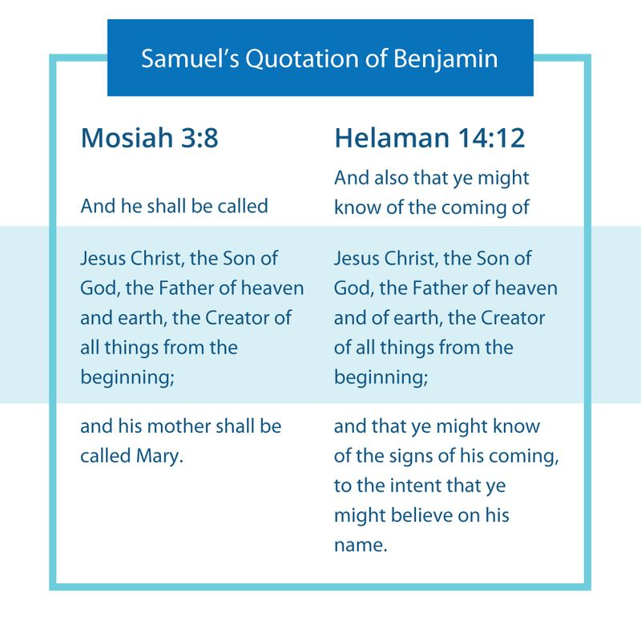
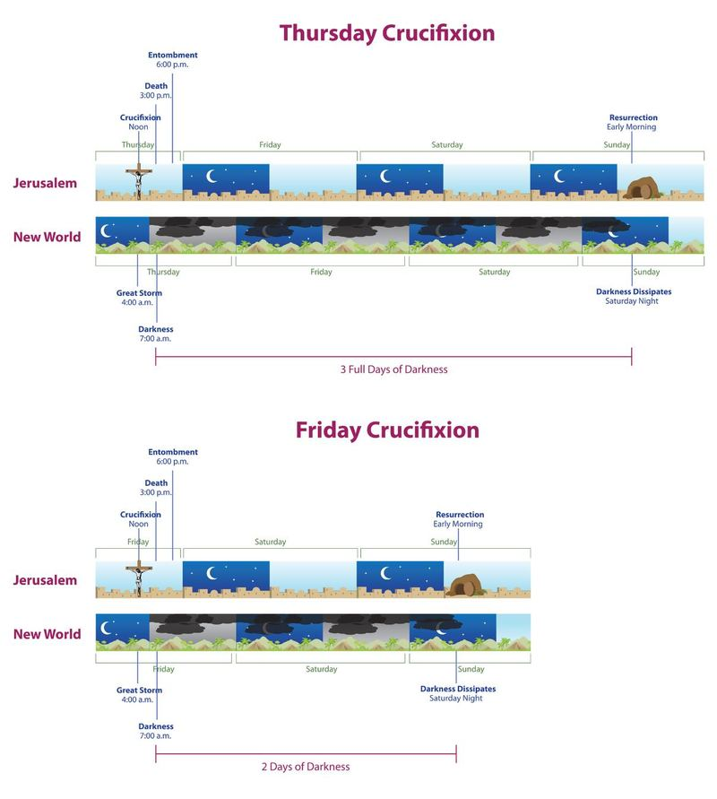

Angels often quote scriptures. For example, on the first occasion when Moroni visited Joseph Smith—and many times thereafter—he quoted scripture and sometimes explained what those scriptures meant. It was not as though the Prophet Joseph spoke with an angel, and then everything simply came to him from scratch.
As the many forms of Hebrew prophetic speech and scriptural passages in Samuel’s material are examined, we can tell that he was using certain conventions and words to make his presentation as acceptable as possible. Samuel wanted to sound authoritative; after all, he was an outsider, and he wanted to ring bells and allude to passages that would help persuade his listeners. Samuel knew what to say because, as he says in Helaman 13:3, he had angels as well as the voice of the Lord to guide and instruct him.
As we have seen above, scholars who have studied the literary aspects and elements of the Bible have identified a long list of what are sometimes called “prophetic speech forms.” This type of research is called “Form Criticism ,” where the text is critically examined from formal perspectives. As the kinds of expressions used by prophets in the Old Testament are studied, a consistent pattern emerges.
For example, many prophets explained how they received their prophetic call and commission. Two Old Testament representations of this prophetic speech form include: • Jeremiah 1:5, in which Jeremiah tells how the Lord described his prophetic calling, which was made before he was even born: “Before I formed thee in the belly I knew thee; … I sanctified thee, and I ordained thee a prophet unto the nations.”
• Isaiah 6:8–12 in which the Lord commissioned Isaiah to go and be a prophet.
Both are recognized as examples of the “prophetic call and commission” formulas.
Samuel the Lamanite also gave an account of his prophetic call and commission. In Helaman 14:9 he said: “And behold, thus hath the Lord commanded me, by his angel, that I should come and tell this thing unto you; yea, he hath commanded that I should prophesy these things unto you; yea, he hath said unto me: Cry unto this people, repent and prepare the way of the Lord.”
One of the most important things that Israelite prophets were expected to do was to deliver the precise message that they had been given, and not deviate one word from what the Lord had told them to say. Here, Samuel had been told, “Cry unto this people, repent and prepare the way of the Lord,” and that is exactly what he does.
Yet another form of prophetic speech is called a “prophetic lawsuit.” What is a prophetic lawsuit? Prophets often delivered God’s message by presenting the facts in such a way as to lay out a type of legal case and controversy against the people—they were sinners, they had broken the law, and God was not happy with them. Thus, God had a cause of action against them for breach of covenant. They had a contract with God, and they had broken it.
Sometimes the prophets then called witnesses to testify of what the people had done. After the testimonies of witnesses, a condemnation was issued, and the prophet passed judgment on the people. Often God, speaking through the prophet, did not immediately execute judgment. The prophet let the people know that although they had been convicted and the sword of judgment hung over them, God would be merciful. He would stay the execution of the judgment and would prolong their days, giving them a little longer to repent and change their ways.
Samuel issued such a prophetic lawsuit. His entire speech takes the overall form of a prophetic judgment speech. He pointed out the weaknesses and problems of the people and then leveled specific charges against them. What had the people of Zarahemla done wrong? They had hidden up their treasures unto themselves and not to the Lord. They

had cast out the living prophets. These indictments were brought up as if the prophet was dragging the people before the judgment seat—and in a prophetic lawsuit, God is ultimately the judge.
As is indicated in at least ten prophetic lawsuits in the Old Testament, it was standard procedure that the judgment was not revoked, but rather the punishment was suspended or held in abeyance in hope that the people would repent. This is what Samuel, in effect, does, constituting very powerfully and impressively a prophetic lawsuit, a legal action by God against this people.
Figure 3 John W. Welch and Greg Welch, "Samuel's Quotation of Benjamin," in Charting the Book of Mormon, chart 105.
Regarding the coming of Christ, Samuel again and most impressively quotes specific words found in the Nephite scriptures. Where and when would he have learned all this?
It is possible that Samuel learned from Nephi, the son of Helaman, who would have been his mentor, as well as from any records in Nephi’s possession. Because Helaman stressed that his sons should remember the words of king Benjamin (see Helaman 5:9), it is likely that Lehi and Nephi used exact quotes from Benjamin in their proselytizing, which Samuel also likely witnessed.
So, it is interesting to note that “the name” of Christ found in the dead center of king Benjamin’s speech in Mosiah 3:8 is found precisely in Samuel’s text in Helaman 14:12: “Jesus Christ, the Son of God, the Father of Heaven and of earth, the Creator of all things from the beginning.” How would Samuel have known that exact wording except through Nephi and Lehi, who were told to “remember, remember” the words of king Benjamin (see Helaman 5:9)?
These words are the ten-part (twenty-one-English-word) title for the Lord—“Jesus Christ, the Son of God, the Father of Heaven and of earth, the creator of all things from the beginning.” King Benjamin had called his people together to give them something special—a name that would distinguish them before God and from all other people on earth. The name could not be “Jehovah” or “Jesus Christ”—many groups had already been given that name. The name that king Benjamin gave to his people was a ten-noun name: Jesus Christ, Son God, Father Heaven Earth, Creator All Beginning.
It was this new name that king Benjamin gave to his people when they entered into the covenant at the temple and took upon them the name of Christ. This was a most sacred name that the Nephites who Samuel was addressing would have already known. King Benjamin was in Zarahemla when he gave his people that name 118 years earlier. He was then on a tall tower by the temple. Samuel was also in Zarahemla. The Nephites would not let him in, so he stood on a tall wall, which was as close as he could get to entering the city. When the Nephites heard Samuel speak the sacred name from the city wall, they were angry and tried to kill him. That was going too far. It must have struck even them as blasphemous for a Lamanite to be speaking the sacred covenant name to them, the people of Zarahemla.
The Nephites had taken the name upon themselves by way of covenant. They had been carefully instructed by king Benjamin that “there is no other name given whereby salvation cometh” and that they should “know” the name. Otherwise, “whosoever shall not take upon him the name of Christ must be called by some other name; therefore, he findeth himself on the left hand of God” (Mosiah 5:8–10). That is what constituted the covenant that King Benjamin and his people made with God. As Samuel spoke to the Nephites in Zarahemla he was reminding them of King Benjamin’s sacred revelation— their heritage—and this was being done by a Lamanite!
Additionally, Zenos had prophesied about the death of Jesus, and Samuel knew the words of Zenos. “[A] sign given of his death,” “the thunderings, and the lightnings,” “the vapor of darkness,” the rending “of the rocks of the earth,” and “the three days of darkness”— these are all phrases of the prophet Zenos that had been recorded in 1 Nephi 19:10–12.
This prophesy would have been available only on the brass plates. Samuel had done his homework and was very familiar with Zenos and his prophesies. It is important to note that Nephi then followed up on Samuel’s prophesies and meticulously tracked fulfillment of the prophecies concerning Christ’s death (see Figure 2).
So, how does the precise dating of the fulfillment of Samuel’s prophecies help us date, in absolute terms, how long Jesus lived (something not known from the New Testament), as well as the dates of his death and birth? The Book of Mormon records the precise day on which the Nephites witnessed the prophesied sign of Christ’s death (3 Nephi 8:5). This exceptional diligence on the part of Nephite record-keepers may help resolve at least two questions that New Testament scholars continue to debate regarding the timing of Christ’s death.
The first question relates to the year when Christ was crucified. What year did Christ die?
The New Testament accounts tie Christ’s crucifixion to a Passover festival during the governorship of Pontius Pilate (AD 26–36). Jeffrey R. Chadwick, church scholar and archaeologist, has summarized the findings of biblical scholars who have used astronomical data to calculate the timing of the Passover, and noted that scholars have determined that the three years AD 27, 30, and 33 “are the only years during the administration of Pontius Pilate when the eve of Passover, and the Passover itself, fell within a three-day window of time prior to Sunday,” the day of Christ’s Resurrection.
Of these three years, based on additional factors involved in correlating the Gospel accounts to confirmable historical details, Chadwick notes, “Most scholars . . . believe that Jesus was killed in [AD] 30.” The issue is not definitively settled, however, and some scholars still believe that Christ died in 33.
The detailed texts kept by the Nephite record-keepers give more data points beyond those found in the New Testament text. The Nephite record helps to finely narrow down the length of Christ’s life. Since Christ must have been born ca. 5–4 BC, the year when King Herod died, the Book of Mormon effectively rules out AD 27 as too short and AD 33 as too long to accommodate for Christ’s death, which happened in the first month of the 34th year in the Nephite calendar (3 Nephi 8:5). Thus, in the view of Chadwick, combining the Book of Mormon with the additional evidence from the New Testament, archaeology, astronomy, and history makes AD 30 the correct year, “beyond any reasonable doubt.”
The second question that is debated by biblical scholars relates to the day of the week Christ was crucified. Long-standing tradition holds that Christ died on a Friday, and most New Testament scholars support this tradition. However, a few scholars have suggested that Christ actually died on a Thursday. These scholars argue that a Thursday can better account for passages in the New Testament which speak of “three days and three nights” in the tomb (Matthew 12:40), and of the resurrection occurring after three days (Matthew 27:63; Mark 8:31), and Sunday being three days since the crucifixion (Luke 24:21).
Jeffrey Chadwick points to an important clue to this puzzle—John’s description of the upcoming Sabbath as “an high day” (John 19:31), meaning it was the first day of the Passover. Since certain festival days, such as Passover, were regarded as “Sabbaths,” no matter what day of the week they occurred (Leviticus 23:7-8, 11, 15, 21, 24, 39), this allows for the possibility that the Sabbath after the crucifixion was not Saturday (the regular weekly Sabbath), but the first day of Passover (a special “Sabbath,” or “high day”), which most likely fell on Friday AD 30.
While the New Testament data does not decisively favor Thursday, the Book of Mormon, a “second witness of Christ” adds some important information. Nephite prophets, including Samuel, predicted that there would be three days of darkness coinciding with the time of Christ’s death until his resurrection (1 Nephi 19:10, Helaman 14:20–27).
Nephite historians, particularly Nephi, documented the fulfillment of this prophecy (3 Nephi 8:19–23; 10:9).
Due to the time difference between Jerusalem and the New World, Chadwick observes, “a Friday crucifixion leads to only two days of darkness in the New World” before Christ rose on Sunday morning. Chadwick concludes that a Thursday crucifixion “exactly fits

the timing necessary for three days of darkness to have occurred in America prior to Jesus’s resurrection” (See Figure 4).
Figure 4 Chart by Book of Mormon Central.
Thanks to Samuel the Lamanite and the Nephite recordkeepers, the Book of Mormon gives crucial information that specifically pinpoints the dating of events that occurred in Jerusalem. Using both records—the New Testament and the Book of Mormon—we are able to state with reasonable certainty that Jesus died on Thursday, April 6, AD 30. His age was 33 years and 4 days at the time of his death. This dating gives profound significance to the timing of the Restoration of Christ’s church through the Prophet Joseph Smith, which occurred exactly 1800 years later.